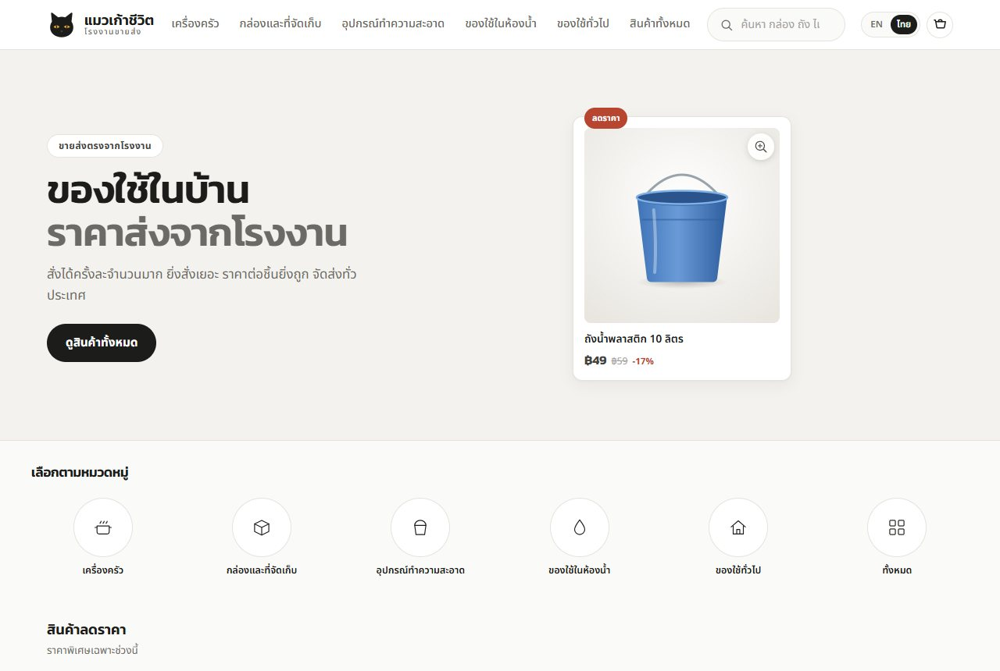
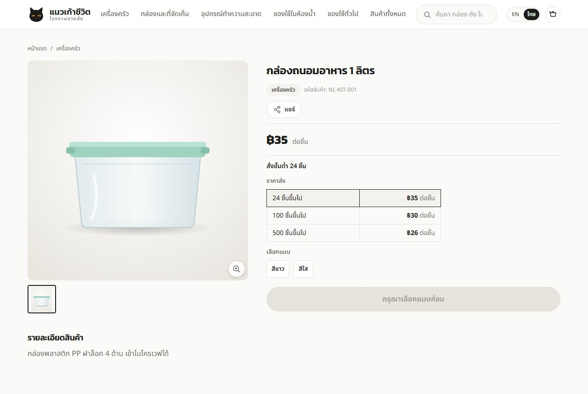
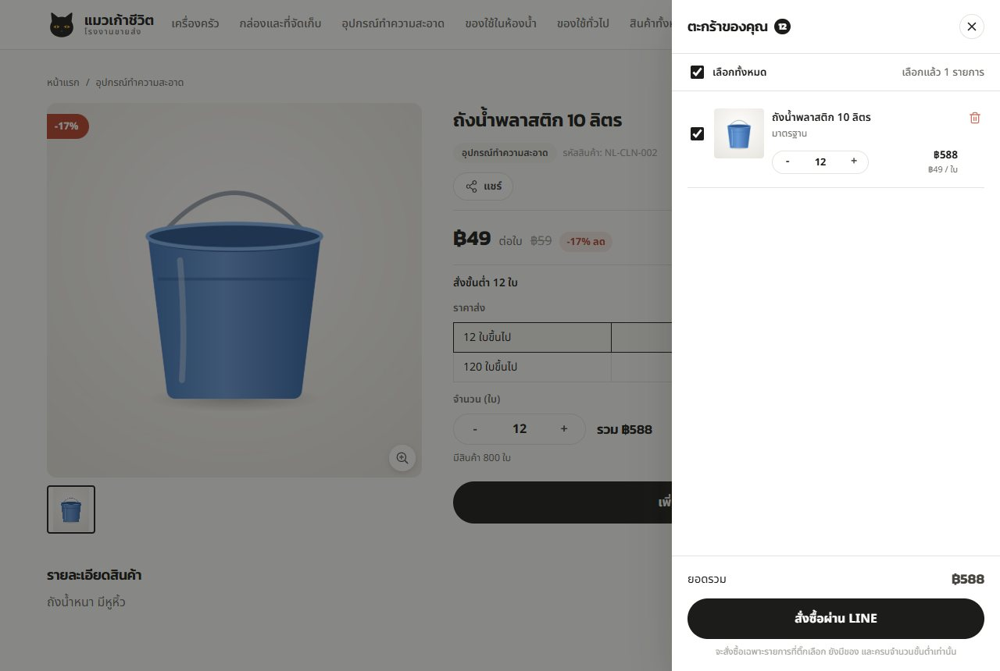
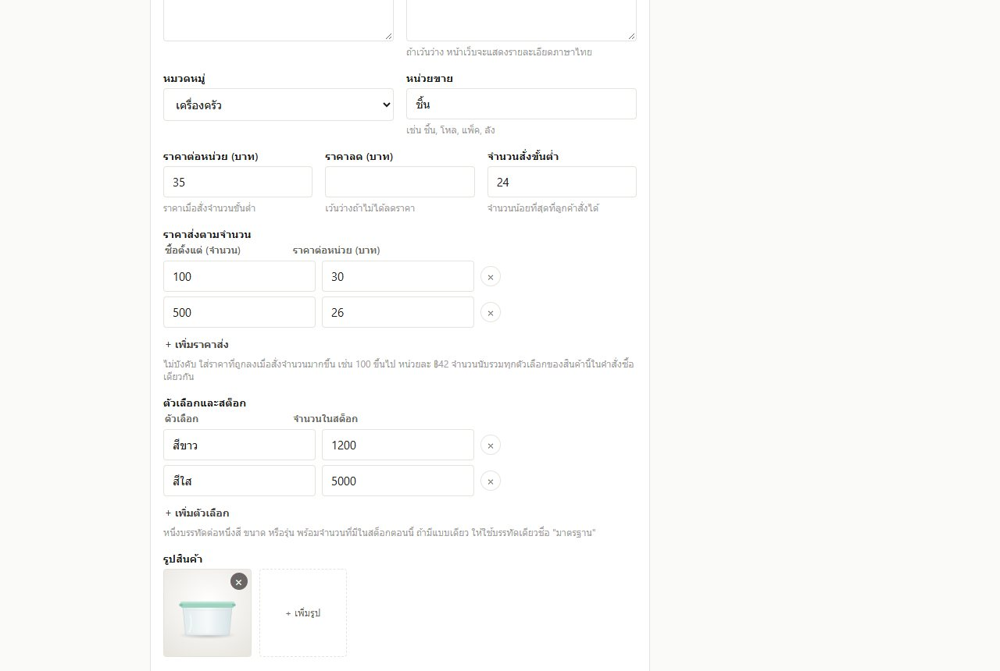
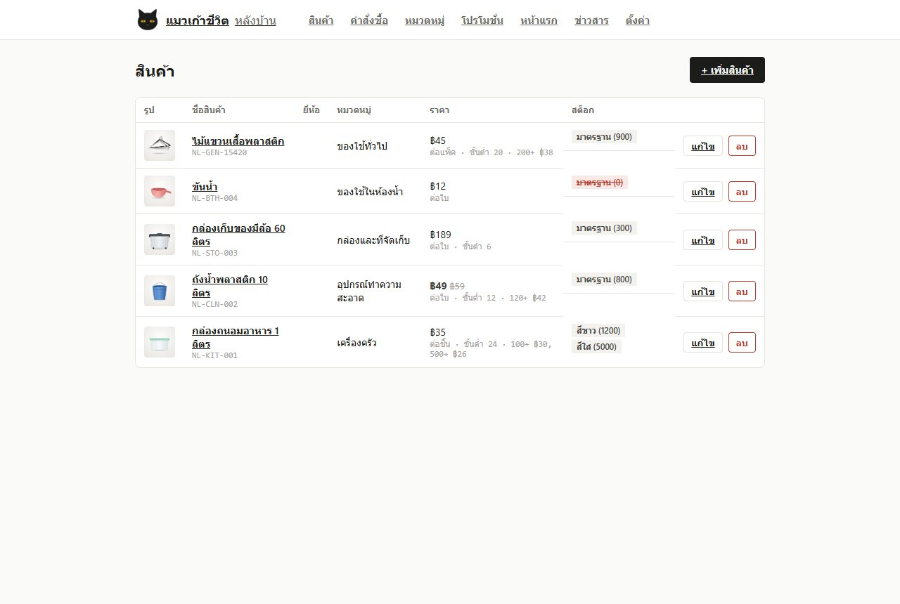
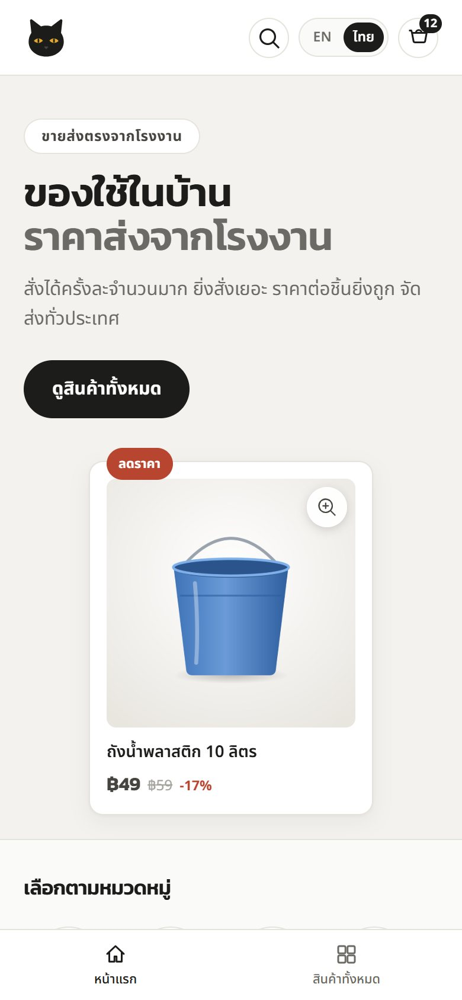

โรงงานขายของใช้ในบ้านทีละจำนวนมาก ลูกค้าเห็นราคาส่งตามจำนวนทันที สั่งผ่าน LINE ส่วนแอดมินเพิ่มสินค้า รูป ราคา และดูคำสั่งซื้อเองได้จากหลังบ้านภาษาไทย

โทนขาวดำมินิมอลตามโลโก้แมวดำ สินค้าแนะนำ หมวดหมู่ และสินค้าลดราคา

ตารางราคาส่งตามจำนวน จำนวนสั่งขั้นต่ำ และตัวเลือกสินค้า เช่น สีหรือขนาด

คิดราคาส่งให้ตามจำนวนรวม ติ๊กเลือกเฉพาะรายการที่จะสั่ง แล้วส่งคำสั่งซื้อทาง LINE

ตั้งหน่วยขาย ราคา จำนวนขั้นต่ำ ราคาส่งหลายขั้น ตัวเลือกพร้อมสต็อก และอัปโหลดรูป ภาษาไทยทั้งหมด

ดูสินค้าทั้งหมด พร้อมเมนูคำสั่งซื้อ หมวดหมู่ โปรโมชั่น ข่าวสาร และตั้งค่าร้าน

ลูกค้าส่วนใหญ่สั่งจากมือถือ ทุกหน้าจึงออกแบบให้อ่านง่ายและกดง่ายบนจอเล็ก